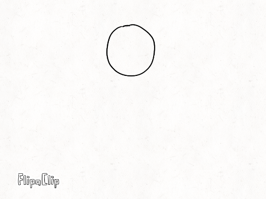
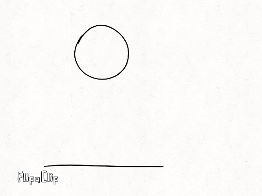
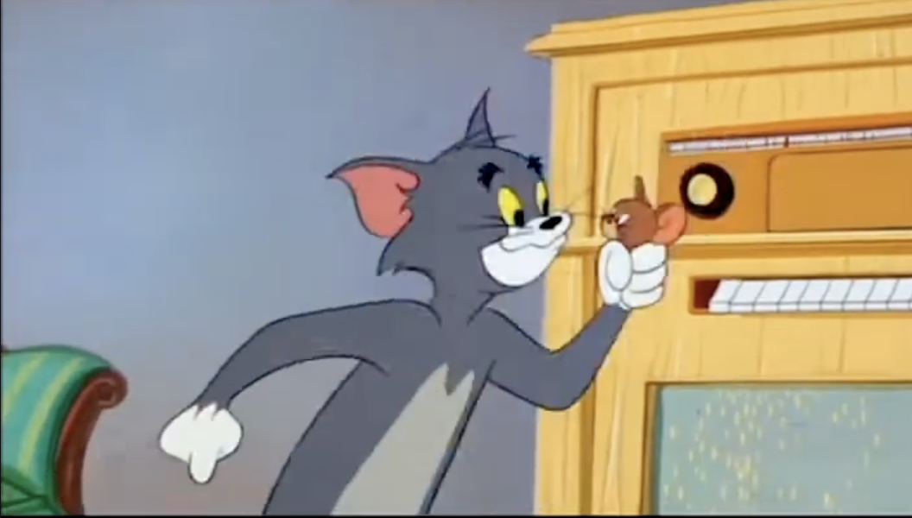

What is it?
The first principle is squash and stretch, which gives moving bodies the ability to elongate or squish themselves; therefore, this feature defines what are different objects made of and their volume. For example, a solid rock has very little or no stretch, or a rubber ball may have more stretch allowing to change its form while it’s in movement. This also applies to characters, adding a little stretch to a character in movement can have more expressiveness and appeal.

In this picture, you can see how the ball jiggles when it hits the floor, this gives the viewer a peception of seeing a balloon full of water, or a jelly-like structure.

In this picture, you can see that the ball falls, with no significant bounce nor jiggle effects. Therefore, the viewer can imply that the object is solid ball. There's the difference between solid and jiggliness or stretchiness that define what objects are made of at the moment of animating.

Click the image to see example. In cartoons, squash and stretch is commonly used to give a cartoony and comedic effect to the action onscreen, like the one you see here in Tom and Jerry. This also gives a sense of exaggeration (more on principle 10).